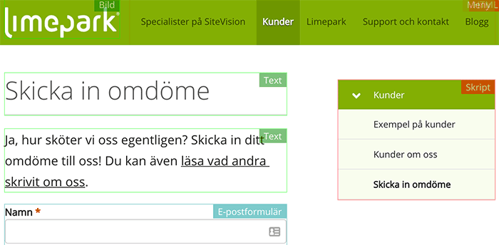

Portlet Outliner är ett litet hjälpande verktyg för att tydliggöra vilka portlets som används på en webbsida under en SiteVision-webb.
När verktyget används så visas en tunn kant runt om varje portlet och en etikett med portletens namn skrivs ut. Nedan ser exempel på hur det ser ut före och efter att verktyget använts.

För att installera den här funktionen drar och släpper du länken nedan på din bokmärkesrad.